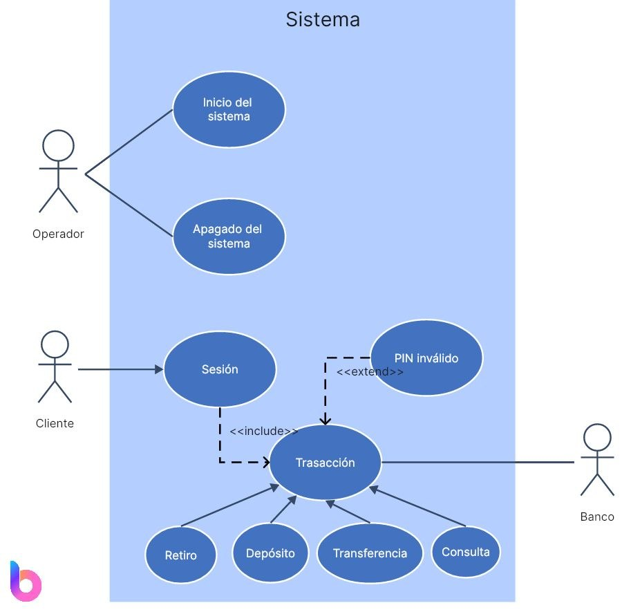

Orientado a objetos / Diagrama de casos de uso
ORIENTADO A OBJETOS · 02
Diagrama de casos de uso
Identifica actores y las funciones que pueden ejecutar dentro del sistema.

Vista ampliada del diagrama de casos de uso y actores del sistema.
DIAGRAMA
| Actor | Casos de uso |
|---|---|
| Encargado de farmacia | Consultar productos, registrar ventas, consultar existencias y revisar alertas. |
| Administrador | Consultar inventario, reponer existencias y revisar resúmenes. |
| Cliente (actor indirecto) | Solicita productos y recibe el detalle de compra; no opera directamente el prototipo. |